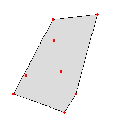

DESCRIPTION
v.hull computes the convex hull of a vector map and outputs
the convex hull polygon as a vector area map. The convex hull, or
convex envelope, for an object or a set of objects is the minimal
convex set containing the given objects. This module creates a vector
polygon containing all vector points or lines of the input map.
In the case of 3D input points, the hull will be a 3D hull as well,
unless the user specifies the -f flag. The 3D hull will be
composed of triangular faces.

|
Fig: Convex hull polygon created with v.hull
|
EXAMPLE
Example of v.hull 3D output (using two random 3D point
clouds, North Carolina sample data set):
g.region rural_1m -p
r.mapcalc "zero = 0"
v.random -z output=random3d_a n=10 zmin=0 zmax=200
v.random -z output=random3d_b n=15 zmin=400 zmax=600
v.hull input=random3d_a output=random3d_a_hull
v.hull input=random3d_b output=random3d_b_hull
d.mon wx0
d.vect random3d_a_hull
d.vect random3d_a color=red
d.vect random3d_b_hull
d.vect random3d_b color=red
REFERENCES
- M. de Berg, M. van Kreveld, M. Overmars, O. Schwarzkopf,
(2000). Computational geometry, chapter 1.1, 2-8.
- J. O'Rourke, (1998). Computational Geometry in C (Second
Edition), chapter 4.
SEE ALSO
v.delaunay
AUTHOR
Andrea Aime, Modena, Italy
Markus Neteler, ITC-irst (update to 5.7)
Benjamin Ducke, CAU Kiel (3D hull support)
Martin Landa, CTU in Prague, Czech Republic (vector lines support)
Last changed: $Date$